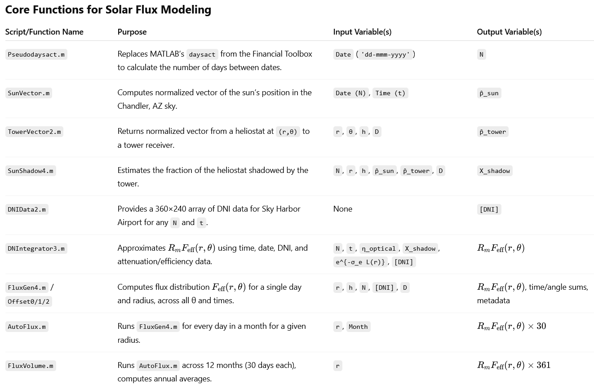

For my senior design project at the University of Arizona in 2017, I led my team through the development of a conceptual design for a zero-emissions solar thermal power plant. The system featured a field of heliostats (sun-tracking mirrors) that concentrated sunlight onto a central tower receiver. This heat was used to elevate the temperature of molten salt circulating through the tower, which was then stored in an insulated tank. The stored thermal energy was subsequently transferred to a high-pressure CO₂ stream, powering a generator via the supercritical CO₂ Brayton Cycle to produce electricity without emitting greenhouse gases during steady-state operation.
This was my group's poster. We presented our project at the College of Engineering's Senior Design Day on May 1, 2017.
In addition to leading the team, as part of my individual role, I developed a comprehensive MATLAB model that simulated the predicted power output of individual heliostats based on their position relative to the central receiver. The model integrated orbital mechanics equations, solar irradiance data, and chemical engineering principles to account for energy losses due to attenuation. This simulation informed the optimal layout and spacing of the heliostat field in our system design.
Our team was honored with the Best Senior Design Team award at the Chemical Engineering Convocation on May 13, 2017.